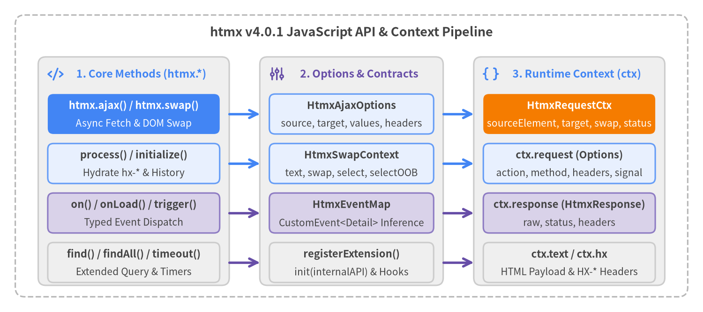

JavaScript API & TypeScript Interfaces
While htmx is designed around declarative HTML attributes, htmx v4.0.1 exposes a focused JavaScript API on the global htmx object for programmatic AJAX requests, dynamic DOM initialization, extended CSS querying, typed event handling, and extension registration. All TypeScript definitions are shipped in src/htmx.d.ts.

Source Code
from drawlib.canvas import save, setup
from drawlib.icons import phosphor
from drawlib.lines import line
from drawlib.shapes import rectangle
from drawlib.styles import Styles
from drawlib.text import text
setup(width=184, height=82, dpi=150)
# Outer container
rectangle((92, 41), width=176, height=74, style=Styles.MutedDashed.patch(shape_r=2.5))
text(
(92, 73.5),
"htmx v4.0.1 JavaScript API & Context Pipeline",
style=Styles.DarkBold.patch(text_size=13.0),
)
# Column 1: Core JS Methods
rectangle((35, 37), width=50, height=60, style=Styles.Neutral.patch(shape_r=2.0))
phosphor.code((14.5, 62.5), width=4.2, style=Styles.PrimaryBold)
text((37, 62.5), "1. Core Methods (htmx.*)", style=Styles.PrimaryBold.patch(text_size=11.0))
rectangle((35, 52), width=45, height=10.5, style=Styles.PrimaryFlat.patch(shape_r=1.5))
text((35, 54.2), "htmx.ajax() / htmx.swap()", style=Styles.WhiteBold.patch(text_size=10.5))
text((35, 49.5), "Async Fetch & DOM Swap", style=Styles.White.patch(text_size=10.0))
rectangle((35, 39), width=45, height=10.5, style=Styles.PrimaryNeutral.patch(shape_r=1.5))
text((35, 41.2), "process() / initialize()", style=Styles.DarkBold.patch(text_size=10.5))
text((35, 36.5), "Hydrate hx-* & History", style=Styles.Dark.patch(text_size=10.0))
rectangle((35, 26), width=45, height=10.5, style=Styles.SecondaryNeutral.patch(shape_r=1.5))
text((35, 28.2), "on() / onLoad() / trigger()", style=Styles.DarkBold.patch(text_size=10.5))
text((35, 23.5), "Typed Event Dispatch", style=Styles.Dark.patch(text_size=10.0))
rectangle((35, 13), width=45, height=10.5, style=Styles.Neutral.patch(shape_r=1.5))
text((35, 15.2), "find() / findAll() / timeout()", style=Styles.DarkBold.patch(text_size=10.5))
text((35, 10.5), "Extended Query & Timers", style=Styles.Dark.patch(text_size=10.0))
# Column 2: Input & Options Interfaces
rectangle((92, 37), width=48, height=60, style=Styles.Neutral.patch(shape_r=2.0))
phosphor.sliders((72.5, 62.5), width=4.2, style=Styles.SecondaryBold)
text((94, 62.5), "2. Options & Contracts", style=Styles.SecondaryBold.patch(text_size=11.0))
rectangle((92, 52), width=43, height=10.5, style=Styles.PrimaryNeutral.patch(shape_r=1.5))
text((92, 54.2), "HtmxAjaxOptions", style=Styles.DarkBold.patch(text_size=10.5))
text((92, 49.5), "source, target, values, headers", style=Styles.Dark.patch(text_size=10.0))
rectangle((92, 39), width=43, height=10.5, style=Styles.PrimaryNeutral.patch(shape_r=1.5))
text((92, 41.2), "HtmxSwapContext", style=Styles.DarkBold.patch(text_size=10.5))
text((92, 36.5), "text, swap, select, selectOOB", style=Styles.Dark.patch(text_size=10.0))
rectangle((92, 26), width=43, height=10.5, style=Styles.SecondaryNeutral.patch(shape_r=1.5))
text((92, 28.2), "HtmxEventMap", style=Styles.DarkBold.patch(text_size=10.5))
text((92, 23.5), "CustomEvent<Detail> Inference", style=Styles.Dark.patch(text_size=10.0))
rectangle((92, 13), width=43, height=10.5, style=Styles.Neutral.patch(shape_r=1.5))
text((92, 15.2), "registerExtension()", style=Styles.DarkBold.patch(text_size=10.5))
text((92, 10.5), "init(internalAPI) & Hooks", style=Styles.Dark.patch(text_size=10.0))
# Column 3: Runtime Context (HtmxRequestCtx)
rectangle((149, 37), width=50, height=60, style=Styles.Neutral.patch(shape_r=2.0))
phosphor.brackets_curly((128.5, 62.5), width=4.2, style=Styles.PrimaryBold)
text((151, 62.5), "3. Runtime Context (ctx)", style=Styles.PrimaryBold.patch(text_size=11.0))
rectangle((149, 52), width=45, height=10.5, style=Styles.AccentFlat.patch(shape_r=1.5))
text((149, 54.2), "HtmxRequestCtx", style=Styles.WhiteBold.patch(text_size=10.5))
text((149, 49.5), "sourceElement, target, swap, status", style=Styles.White.patch(text_size=10.0))
rectangle((149, 39), width=45, height=10.5, style=Styles.PrimaryNeutral.patch(shape_r=1.5))
text((149, 41.2), "ctx.request (Options)", style=Styles.DarkBold.patch(text_size=10.5))
text((149, 36.5), "action, method, headers, signal", style=Styles.Dark.patch(text_size=10.0))
rectangle((149, 26), width=45, height=10.5, style=Styles.SecondaryNeutral.patch(shape_r=1.5))
text((149, 28.2), "ctx.response (HtmxResponse)", style=Styles.DarkBold.patch(text_size=10.5))
text((149, 23.5), "raw, status, headers", style=Styles.Dark.patch(text_size=10.0))
rectangle((149, 13), width=45, height=10.5, style=Styles.Neutral.patch(shape_r=1.5))
text((149, 15.2), "ctx.text / ctx.hx", style=Styles.DarkBold.patch(text_size=10.5))
text((149, 10.5), "HTML Payload & HX-* Headers", style=Styles.Dark.patch(text_size=10.0))
# Connectors between columns
line((60, 52), (68, 52), arrow_head="->", style=Styles.PrimaryBold)
line((60, 39), (68, 39), arrow_head="->", style=Styles.PrimaryBold)
line((60, 26), (68, 26), arrow_head="->", style=Styles.SecondaryBold)
line((60, 13), (68, 13), arrow_head="->", style=Styles.SecondaryBold)
line((116, 52), (124, 52), arrow_head="->", style=Styles.PrimaryBold)
line((116, 39), (124, 39), arrow_head="->", style=Styles.PrimaryBold)
line((116, 26), (124, 26), arrow_head="->", style=Styles.SecondaryBold)
line((116, 13), (124, 13), arrow_head="->", style=Styles.SecondaryBold)
save()
Summary of JavaScript API & TypeScript Symbols#
| Symbol | Category | Return / Type | Purpose |
|---|---|---|---|
htmx.ajax() |
Core Method | Promise<void> |
Issues an htmx-managed fetch() request and swaps the HTML response into the DOM. |
htmx.process() |
Core Method | void |
Initializes hx-* attributes on a root Element or ShadowRoot and its descendants. |
htmx.initialize() |
Core Method | void |
Wires browser history listeners once and runs htmx.process(document.body). |
htmx.swap() |
Core Method | Promise<void> |
Parses and swaps an HTML string into the DOM with OOB, <hx-partial>, and settle support. |
htmx.on() |
Core Method | (evt) => void |
Registers an event listener on document or a specific target and returns the handler. |
htmx.onLoad() |
Core Method | void |
Registers a callback invoked on every element subtree processed by htmx. |
htmx.trigger() |
Core Method | boolean |
Dispatches a cancelable, composed CustomEvent on an element or document. |
htmx.find() |
Core Method | Element | null |
Finds the first element matching an extended htmx CSS selector. |
htmx.findAll() |
Core Method | Element[] |
Finds all elements matching an extended htmx CSS selector. |
htmx.timeout() |
Core Method | Promise<void> | undefined |
Returns a Promise that resolves after a millisecond number or interval string. |
htmx.parseInterval() |
Core Method | number | undefined |
Parses an interval string ("500ms", "2s", "1m") or number into milliseconds. |
htmx.registerExtension() |
Core Method | void |
Registers a global htmx v4 extension and invokes its init(internalAPI) hook. |
htmx.version |
Core Property | string |
Read-only version string ("4.0.1" or "4.0.1-htmax"). |
HtmxRequestCtx |
Interface | TypeScript Interface | Mutable per-request context passed as evt.detail.ctx across lifecycle events. |
HtmxRequestOptions |
Interface | TypeScript Interface | Underlying fetch() configuration (ctx.request) modifiable in htmx:config:request. |
HtmxResponse |
Interface | TypeScript Interface | Wrapper around the native Fetch Response (ctx.response) with raw, status, and headers. |
HtmxSwapContext |
Interface | TypeScript Interface | Input contract accepted by htmx.swap(ctx). |
HtmxAjaxOptions |
Interface | TypeScript Interface | Configuration object accepted by htmx.ajax(verb, path, options). |
Core JavaScript Methods#
htmx.ajax()#
Issues an htmx-managed HTTP request programmatically and swaps the returned HTML into the DOM. Unlike calling window.fetch() directly, htmx.ajax() runs the full htmx request pipeline—collecting form values, evaluating hx-vals and hx-headers, firing htmx:config:request / htmx:before:request / htmx:after:request, processing HX-* response headers, and executing OOB and <hx-partial> swaps.
TypeScript Signature
ajax(
verb: string,
path: string,
options?: Element | string | HtmxAjaxOptions
): Promise<void>;
Parameters
| Parameter | Type | Required | Description |
|---|---|---|---|
verb |
string |
Yes | HTTP method ("GET", "POST", "PUT", "PATCH", "DELETE", "QUERY"). Normalized to uppercase. |
path |
string |
Yes | Request URL or path (may include a #fragment anchor). |
options |
Element | string | HtmxAjaxOptions |
No | Target element, extended CSS selector string for the swap target, or an HtmxAjaxOptions object. If omitted, sourceElement and target default to document.body. |
| Returns | Promise<void> |
— | Resolves when the request and DOM swap complete. Rejects with Error('Source not found') if options.source is an unmatched selector, or Error('Target not found') if options.target does not match any element. |
Usage Examples
// 1. Simple GET request swapping into a CSS selector target
await htmx.ajax('GET', '/users/list', '#user-table');
// 2. POST request with full HtmxAjaxOptions, custom values, and headers
await htmx.ajax('POST', '/tasks/archive', {
source: '#archive-btn',
target: '#task-list',
swap: 'innerMorph',
values: { status: 'completed', batchSize: 50 },
headers: { 'X-Client-Action': 'bulk-archive' },
push: '/tasks?view=archived'
});
htmx.process()#
Initializes htmx attributes (hx-get, hx-post, hx-on*, hx-boost, etc.) on root and all of its descendants. htmx automatically calls htmx.process() on newly swapped fragments, so you only need to call it manually when injecting HTML via third-party libraries, innerHTML, or document.createElement(), or when mutating hx-* attributes on an already-initialized element (with force = true).
TypeScript Signature
process(root: Element | ShadowRoot, force?: boolean): void;
Parameters
| Parameter | Type | Required | Description |
|---|---|---|---|
root |
Element | ShadowRoot |
Yes | Connected DOM Element or ShadowRoot to scan. Returns immediately if !root?.isConnected or if root is inside an [hx-ignore] subtree. |
force |
boolean |
No | When true, tears down existing listeners, timers, and IntersectionObserver instances on root and all [data-htmx-powered] descendants before re-initializing from current attributes. |
Usage Examples
// 1. Initialize dynamically created DOM nodes
const card = document.createElement('div');
card.innerHTML = '<button hx-post="/like/42" hx-swap="outerHTML">Like</button>';
document.querySelector('#feed').appendChild(card);
htmx.process(card);
// 2. Force re-initialization after changing hx-* attributes in place
const btn = htmx.find('#action-btn');
btn.setAttribute('hx-get', '/api/v2/items');
btn.setAttribute('hx-trigger', 'click once');
htmx.process(btn, true);
htmx.initialize()#
Sets up global browser history navigation listeners (using the Navigation API navigate event on supporting browsers or popstate on Firefox/fallback) and processes document.body. Called automatically on DOMContentLoaded (or on the next macrotask if the document is already loaded).
TypeScript Signature
initialize(): void;
Parameters
| Parameter | Type | Required | Description |
|---|---|---|---|
| (none) | — | — | Takes no parameters. Safe to call multiple times; history listeners are guarded by an internal #historyInitialized flag. |
Usage Examples
// Call manually when loading htmx asynchronously after DOMContentLoaded
import('/vendor/htmx.js').then(() => {
htmx.initialize();
});
htmx.swap()#
Parses an HTML string and swaps it into the DOM according to an HtmxSwapContext specification. Handles <title> extraction, <script> activation (including htmx.config.inlineScriptNonce and Trusted Types), [hx-preserve] elements, hx-swap-oob elements, <hx-partial> elements, View Transitions, and the settle lifecycle.
TypeScript Signature
swap(ctx: HtmxSwapContext): Promise<void>;
Parameters
| Parameter | Type | Required | Description |
|---|---|---|---|
ctx |
HtmxSwapContext |
Yes | Swap context object specifying text, target, swap style, optional select/selectOOB selectors, and history/transition flags. |
| Returns | Promise<void> |
— | Resolves after the swap and settle phases (including View Transitions or CSS settle delays) complete. |
Usage Examples
// Perform a manual morph swap from a custom WebSocket or SSE payload
await htmx.swap({
text: '<div id="metrics"><span class="val">99.98%</span></div>',
target: document.querySelector('#metrics'),
swap: 'outerMorph',
transition: true
});
htmx.on()#
Registers an event listener on document (2-argument form) or a specific target element/selector (3-argument form). In TypeScript, listening to any key of HtmxEventMap automatically infers evt.detail. Returns the registered handler function so it can be passed directly to removeEventListener() (replacing htmx 2's removed htmx.off()).
TypeScript Signature
on<K extends keyof HtmxEventMap>(
event: K,
handler: (evt: HtmxEvent<K>) => void
): (evt: HtmxEvent<K>) => void;
on<K extends keyof HtmxEventMap>(
target: string | Element,
event: K,
handler: (evt: HtmxEvent<K>) => void
): (evt: HtmxEvent<K>) => void;
on<K extends keyof HTMLElementEventMap>(
event: K,
handler: (evt: HTMLElementEventMap[K]) => void
): (evt: HTMLElementEventMap[K]) => void;
on<K extends keyof HTMLElementEventMap>(
target: string | Element,
event: K,
handler: (evt: HTMLElementEventMap[K]) => void
): (evt: HTMLElementEventMap[K]) => void;
on<K extends keyof WindowEventMap>(
target: Window,
event: K,
handler: (evt: WindowEventMap[K]) => void
): (evt: WindowEventMap[K]) => void;
on(event: string, handler: (evt: Event) => void): (evt: Event) => void;
on(target: string | Element, event: string, handler: (evt: Event) => void): (evt: Event) => void;
Parameters
| Parameter | Type | Required | Description |
|---|---|---|---|
target |
string | Element | Window |
No | Target element or extended selector string. Defaults to document when omitted. |
event |
string |
Yes | Event name (e.g., 'htmx:config:request', 'htmx:after:swap', 'click'). |
handler |
(evt: CustomEvent) => void |
Yes | Callback function invoked when the event fires. |
| Returns | Function |
— | The exact handler reference passed in, ready for removeEventListener(event, handler). |
Usage Examples
// 1. Global listener on document with full evt.detail.ctx inference
const onConfig = htmx.on('htmx:config:request', (evt) => {
evt.detail.ctx.request.headers['X-CSRF-Token'] = window.csrfToken;
});
// Later, remove listener using standard DOM API:
document.removeEventListener('htmx:config:request', onConfig);
// 2. Scoped listener on a specific element via selector
htmx.on('#upload-form', 'htmx:after:request', (evt) => {
if (evt.detail.ctx.response?.status === 200) {
console.log('Upload finished!');
}
});
htmx.onLoad()#
Registers a callback that fires whenever htmx finishes processing a DOM element or subtree (internally delegates to htmx.on('htmx:after:process', ...) and respects htmx.config.metaCharacter). Ideal for initializing third-party widgets (charts, datepickers, tooltips) inside newly swapped content.
TypeScript Signature
onLoad(callback: (elt: Element) => void): void;
Parameters
| Parameter | Type | Required | Description |
|---|---|---|---|
callback |
(elt: Element) => void |
Yes | Function receiving the root Element that was just processed (document.body on initial load, or each newly inserted element after a swap). |
Usage Examples
htmx.onLoad((content) => {
for (const el of htmx.findAll(content, '[data-tooltip]')) {
initTooltipWidget(el);
}
});
htmx.trigger()#
Dispatches a cancelable, composed CustomEvent on elt (or document if elt is disconnected) and returns true if the event was not cancelled (!detail?.cancelled && target.dispatchEvent(evt)). Also used to send control events such as htmx:abort.
TypeScript Signature
trigger<K extends keyof HtmxEventMap>(
elt: Element | string,
event: K,
detail: HtmxEventMap[K],
bubbles?: boolean
): boolean;
trigger(
elt: Element | string,
event: string,
detail?: any,
bubbles?: boolean
): boolean;
Parameters
| Parameter | Type | Required | Description |
|---|---|---|---|
elt |
Element | string |
Yes | Target Element or extended CSS selector string. Falls back to document if the element is not connected. |
event |
string |
Yes | Name of the CustomEvent to dispatch. |
detail |
any |
No | Event detail payload object (defaults to {}). |
bubbles |
boolean |
No | Whether the event bubbles up the DOM tree (defaults to true). |
| Returns | boolean |
— | true if neither detail.cancelled nor evt.preventDefault() cancelled the event; false otherwise. |
Usage Examples
// 1. Dispatch a custom domain event that triggers an hx-trigger="refreshMetrics from:body"
htmx.trigger(document.body, 'refreshMetrics', { source: 'manual' });
// 2. Abort an in-flight request on an element
htmx.trigger('#slow-report-btn', 'htmx:abort');
htmx.find()#
Finds the first element matching an extended htmx CSS selector across document (1-argument form) or relative to elt (2-argument form). Supports directional and contextual prefixes including this, closest <sel>, find <sel>, next [sel], previous [sel], document, window, body, host, and global <sel>.
TypeScript Signature
find(selector: string): Element | null;
find(elt: Element, selector: string): Element | null;
Parameters
| Parameter | Type | Required | Description |
|---|---|---|---|
elt |
Element |
No | Anchor element for relative selectors (closest, find, next, previous). Defaults to document when omitted. |
selector |
string |
Yes | Standard or extended htmx CSS selector. |
| Returns | Element | null |
— | The first matching Element (or undefined/null if none matched). |
Usage Examples
// 1. Document-wide query
const modal = htmx.find('#confirm-modal');
// 2. Relative extended query from a button element
const row = htmx.find(buttonElt, 'closest tr');
const nextInput = htmx.find(buttonElt, 'next input[type="text"]');
htmx.findAll()#
Finds all elements matching an extended htmx CSS selector across document or relative to elt, returning a deduplicated Element[] array ([...new Set(result)]). Supports comma-separated HCON selector lists and Shadow DOM root boundaries (use global <sel> to cross Shadow DOM boundaries).
TypeScript Signature
findAll(selector: string): Element[];
findAll(elt: Element, selector: string): Element[];
Parameters
| Parameter | Type | Required | Description |
|---|---|---|---|
elt |
Element |
No | Anchor element for relative queries (findAll <sel>, closest <sel>). Defaults to document when omitted. |
selector |
string |
Yes | Standard or extended htmx CSS selector (supports comma-separated HCON expressions). |
| Returns | Element[] |
— | Array of unique matching Element nodes. |
Usage Examples
// 1. Find all active cards in the document
const cards = htmx.findAll('.card.active');
// 2. Find all descendant inputs and buttons inside a form
const controls = htmx.findAll(formElt, 'findAll input, findAll button');
htmx.timeout()#
Returns a Promise<void> that resolves after the specified duration. Accepts either a millisecond number or an htmx interval string ("500ms", "2s", "1m"). Returns undefined if the parsed time is 0, negative, or invalid.
TypeScript Signature
timeout(time: number | string): Promise<void> | undefined;
Parameters
| Parameter | Type | Required | Description |
|---|---|---|---|
time |
number | string |
Yes | Duration in milliseconds (e.g., 200) or an interval string ("200ms", "1.5s", "1m"). |
| Returns | Promise<void> | undefined |
— | A Promise resolving after time ms, or undefined when time <= 0 or unparseable. |
Usage Examples
// Pause inside an async event handler or custom extension
await htmx.timeout('300ms');
htmx.parseInterval()#
Parses an htmx time interval string or number into milliseconds. Supports ms (×1), s (×1000), and m (×60000) suffixes, as well as unitless numeric strings.
TypeScript Signature
parseInterval(str: string | number): number | undefined;
Parameters
| Parameter | Type | Required | Description |
|---|---|---|---|
str |
string | number |
Yes | Interval string ("500ms", "2s", "1.5m") or number (1000). |
| Returns | number | undefined |
— | Duration in milliseconds, or undefined if str cannot be parsed as a valid number. |
Usage Examples
htmx.parseInterval('500ms'); // 500
htmx.parseInterval('2.5s'); // 2500
htmx.parseInterval('1m'); // 60000
htmx.parseInterval(1200); // 1200
htmx.parseInterval('invalid'); // undefined
htmx.registerExtension()#
Registers a global htmx v4 extension. In htmx v4, extensions apply page-wide once registered without requiring hx-ext attributes in HTML. If htmx.config.extensions is set to a non-empty comma-separated whitelist, only extensions whose name is in that list are permitted to register. Duplicate registrations for the same name are ignored.
TypeScript Signature
registerExtension(name: string, ext: any): void;
Parameters
| Parameter | Type | Required | Description |
|---|---|---|---|
name |
string |
Yes | Unique extension identifier (matched against htmx.config.extensions if whitelisting is active). |
ext |
Record<string, Function> |
Yes | Extension definition object containing an optional init(internalAPI) callback, underscored event hooks (htmx_before_request, htmx_after_init, etc.), or handle_swap. |
Usage Examples
(() => {
let api;
htmx.registerExtension('request-timer', {
init(internalAPI) {
api = internalAPI;
},
htmx_before_request(elt, detail) {
detail.ctx.startedAt = performance.now();
},
htmx_after_request(elt, detail) {
const elapsed = Math.round(performance.now() - detail.ctx.startedAt);
console.log(`Request to ${detail.ctx.request.action} took ${elapsed}ms`);
}
});
})();
htmx.version#
Read-only string property identifying the loaded htmx v4 release.
TypeScript Signature
readonly version: string;
Property Details
| Property | Type | Value in v4.0.1 | Description |
|---|---|---|---|
htmx.version |
string |
"4.0.1" / "4.0.1-htmax" |
Returns "4.0.1" in standard htmx.js builds and "4.0.1-htmax" in the bundled htmax.js distribution. |
Usage Examples
console.log(`Running htmx ${htmx.version}`);
TypeScript Context & Options Interfaces#
HtmxRequestCtx#
The central per-request state object created by __createRequestContext() and passed as evt.detail.ctx across all request and swap lifecycle events (htmx:config:request, htmx:before:request, htmx:before:response, htmx:after:request, htmx:before:swap, htmx:after:swap, htmx:finally:request, etc.). Both TypeScript-declared properties (src/htmx.d.ts) and runtime properties added by src/htmx.js are listed below.
TypeScript Definition
export interface HtmxRequestCtx {
sourceElement: Element;
sourceEvent: Event | null;
target: Element;
select: string;
selectOOB: string;
swap: string;
push: string | boolean;
replace: string | boolean;
transition: boolean;
request: HtmxRequestOptions;
response?: HtmxResponse;
text?: string;
}
Properties (TypeScript Contract + Runtime Fields)
| Property | Type | Phase Available | Description |
|---|---|---|---|
sourceElement |
Element |
Always | Element that triggered the request (may be updated to mainSwap.target after swap if original element was disconnected). |
sourceEvent |
Event | null |
Always | DOM event that triggered the request. |
target |
Element |
Always | Resolved target element where the response will be swapped (can be overridden by HX-Retarget or in htmx:before:swap). |
select |
string |
Always | CSS selector from hx-select (or overridden by HX-Reselect). |
selectOOB |
string |
Always | Selector specification from hx-select-oob. |
swap |
string |
Always | Swap specification from hx-swap or htmx.config.defaultSwap (or overridden by HX-Reswap / hx-status:XXX). |
push |
string | boolean |
Always | hx-push-url value ("true", URL string, or false). |
replace |
string | boolean |
Always | hx-replace-url value ("true", URL string, or false). |
transition |
boolean |
Always | Whether the View Transitions API is enabled for this request. |
request |
HtmxRequestOptions |
Always | Mutable Fetch configuration object. Modify in htmx:config:request or htmx:before:request. |
response |
HtmxResponse | undefined |
htmx:before:response+ |
Populated once fetch() resolves with { raw, status, headers }. |
text |
string | undefined |
htmx:after:request+ |
Response body text read from response.raw.text(). Can be mutated in htmx:after:request before swapping. |
status |
string |
Runtime (htmx.js) |
Lifecycle status string: "created", "issuing", "response received", "swapped", or "error: ...". |
confirm |
string | undefined |
Runtime (htmx.js) |
Value of hx-confirm on sourceElement, if present. |
hx |
Record<string, string> |
htmx:before:response+ |
Normalized map of HX-* response headers (e.g., ctx.hx.trigger, ctx.hx.retarget, ctx.hx.reswap, ctx.hx.pushurl). |
fetch |
typeof window.fetch |
htmx:before:request |
Function used to execute the HTTP request. Extensions (like hx-preload) can override ctx.fetch to return a cached Response. |
extensionPromise |
Promise<any> | undefined |
Runtime (htmx.js) |
Optional Promise set by streaming extensions (e.g., hx-multipart) so finally waits until streaming finishes before hiding indicators. |
indicators |
Element[] |
htmx:before:request+ |
Array of indicator elements currently carrying htmx-request. |
disabledElements |
Element[] |
htmx:before:request+ |
Array of elements disabled via hx-disable for the duration of the request. |
Usage Examples
htmx.on('htmx:after:request', (evt) => {
const { ctx } = evt.detail;
if (ctx.response?.status === 200 && ctx.text) {
// Sanitize or transform response HTML before htmx.swap() runs
ctx.text = ctx.text.replaceAll('{{BUILD_VERSION}}', htmx.version);
}
});
HtmxRequestOptions#
Represents ctx.request, the object passed directly as the second argument to fetch(ctx.request.action, ctx.request). You can customize headers, URL, body, credentials, cache mode, or timeout inside htmx:config:request, or per-element via the hx-config attribute.
TypeScript Definition
export interface HtmxRequestOptions {
validate: boolean;
action: string;
anchor?: string;
method: string;
headers: Record<string, string>;
body?: BodyInit | null;
abort: () => void;
signal: AbortSignal;
credentials: RequestCredentials;
mode: RequestMode;
cache?: RequestCache;
timeout?: number | string | null;
[key: string]: any;
}
Properties
| Property | Type | Default | Description |
|---|---|---|---|
validate |
boolean |
true on <form> |
Whether reportValidity() is called before sending the request. |
action |
string |
Element URL | Request URL stripped of its #fragment anchor. For GET/DELETE, query parameters are appended right after htmx:config:request. |
anchor |
string | undefined |
undefined |
URL #fragment extracted from the action URL, used for history and post-swap scrolling. |
method |
string |
"GET" |
Uppercase HTTP verb ("GET", "POST", "PUT", "PATCH", "DELETE", "QUERY"). |
headers |
Record<string, string> |
Core HX-* headers |
Request headers map (HX-Request, HX-Source, HX-Target, HX-Current-URL, HX-Request-Type, Accept: text/html). |
body |
BodyInit | null |
FormData |
During htmx:config:request, body is a FormData instance. After htmx:config:request, converted to query params (null body) for GET/DELETE or URLSearchParams (unless multipart/form-data). |
abort |
() => void |
Bound ac.abort() |
Aborts the underlying AbortController for this request. |
signal |
AbortSignal |
ac.signal |
AbortSignal passed to fetch(). |
credentials |
RequestCredentials |
"same-origin" |
Fetch credentials mode ("same-origin", "include", "omit"). Overridable via hx-config. |
mode |
RequestMode |
htmx.config.mode |
Fetch CORS mode ("same-origin", "cors", "no-cors"). Locked to htmx.config.mode over hx-config for security. |
cache |
RequestCache | undefined |
undefined |
Fetch cache mode ("default", "no-store", "reload", "no-cache", "force-cache"). |
timeout |
number | string | null |
htmx.config.defaultTimeout |
Per-request timeout override in ms or interval string (e.g., "10s"). |
Usage Examples
// Append a dynamic parameter to the FormData body during htmx:config:request
htmx.on('htmx:config:request', (evt) => {
const { request } = evt.detail.ctx;
request.headers['X-Trace-Id'] = crypto.randomUUID();
if (request.body instanceof FormData) {
request.body.set('client_tz', Intl.DateTimeFormat().resolvedOptions().timeZone);
}
});
HtmxResponse#
Wraps the native Fetch API Response on ctx.response once fetch() resolves.
TypeScript Definition
export interface HtmxResponse {
raw: Response;
status: number;
headers: Headers;
}
Properties
| Property | Type | Description |
|---|---|---|
raw |
Response |
The underlying Fetch API Response object. In htmx:before:response, the body stream (raw.body) has not yet been consumed by raw.text(). |
status |
number |
HTTP status code (e.g., 200, 204, 422, 500). |
headers |
Headers |
Native Fetch Headers instance from the server response. |
Usage Examples
// Inspect raw response headers in htmx:before:response
htmx.on('htmx:before:response', (evt) => {
const { response } = evt.detail.ctx;
const contentType = response?.headers.get('Content-Type') || '';
if (contentType.includes('application/octet-stream')) {
// Cancel htmx text consumption and handle binary stream manually
evt.preventDefault();
}
});
HtmxSwapContext#
Defines the options object accepted by htmx.swap(ctx).
TypeScript Definition
export interface HtmxSwapContext {
text: string;
sourceElement?: Element;
swap?: string;
select?: string;
selectOOB?: string;
target?: Element;
transition?: boolean;
push?: string | boolean;
replace?: string | boolean;
anchor?: string;
}
Properties
| Property | Type | Required | Description |
|---|---|---|---|
text |
string |
Yes | Raw HTML string to parse and swap into the DOM. |
sourceElement |
Element |
No | Element used as the event target for htmx:before:swap / htmx:after:swap and relative selector resolution. |
swap |
string |
No | Swap strategy and modifiers (e.g., "innerHTML", "outerMorph", "beforeend scroll:bottom"). Defaults to htmx.config.defaultSwap. |
select |
string |
No | CSS selector to extract a subset of nodes from text for the main swap. |
selectOOB |
string |
No | Comma-separated selector spec for out-of-band extractions from text. |
target |
Element |
No | DOM element to swap into. Defaults to document.body if omitted. |
transition |
boolean |
No | Whether to wrap the swap in document.startViewTransition(). |
push |
string | boolean |
No | Push URL to browser history (true or URL path string). |
replace |
string | boolean |
No | Replace current browser history entry (true or URL path string). |
anchor |
string |
No | Element ID to scroll into view after swapping. |
Usage Examples
await htmx.swap({
text: '<ul id="notifications"><li>Deployment succeeded</li></ul>',
target: htmx.find('#notifications'),
swap: 'outerMorph',
transition: false
});
HtmxAjaxOptions#
Defines the third argument accepted by htmx.ajax(verb, path, options) when passing a configuration object instead of a target element or selector.
TypeScript Definition
export interface HtmxAjaxOptions {
source?: Element | string;
event?: Event;
target?: Element | string;
swap?: string;
values?: Record<string, any>;
headers?: Record<string, string>;
select?: string;
selectOOB?: string;
push?: string | boolean;
replace?: string | boolean;
}
Properties
| Property | Type | Required | Description |
|---|---|---|---|
source |
Element | string |
No | Source element or CSS selector (used for attribute inheritance, HX-Source header, and event dispatch). Defaults to document.body. |
event |
Event |
No | Triggering DOM Event to attach as ctx.sourceEvent. |
target |
Element | string |
No | Target element or extended CSS selector where the response will be swapped. |
swap |
string |
No | Swap strategy and modifiers (e.g., "innerHTML", "outerHTML transition:true"). |
values |
Record<string, any> |
No | Key-value pairs merged into the request FormData (overrides existing keys of the same name). |
headers |
Record<string, string> |
No | Additional HTTP request headers merged into ctx.request.headers. |
select |
string |
No | CSS selector to filter the main response fragment. |
selectOOB |
string |
No | Selector specification for out-of-band swaps. |
push |
string | boolean |
No | Push URL to browser history after swap (true uses the request URL). |
replace |
string | boolean |
No | Replace current URL in browser history after swap (true uses the request URL). |
Usage Examples
await htmx.ajax('PUT', '/settings/profile', {
source: '#profile-form',
target: '#profile-panel',
swap: 'outerMorph',
values: { theme: 'dark', notifications: true },
headers: { 'X-Requested-With': 'htmx-ajax' },
replace: '/settings?tab=profile'
});